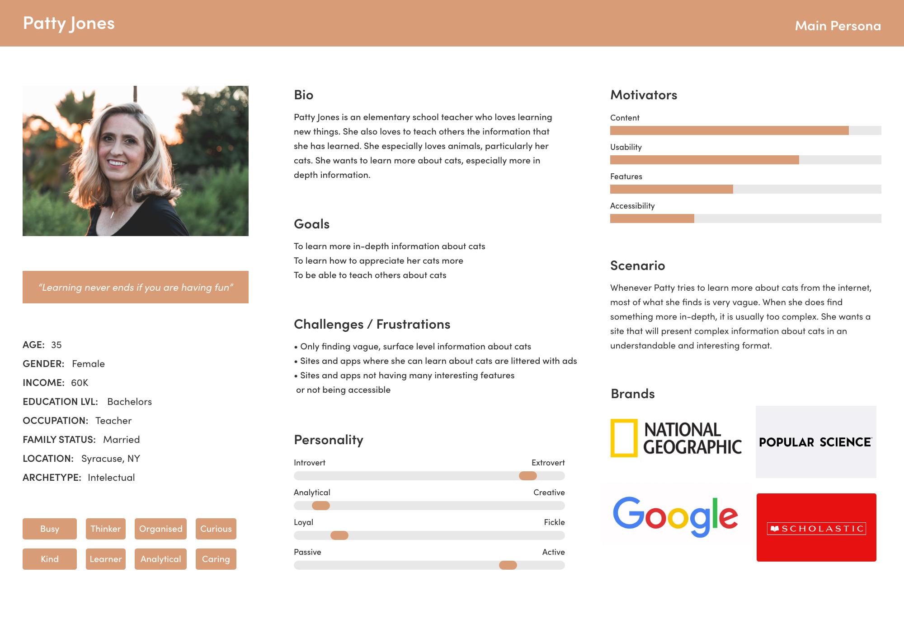

The Situation
I took a magazine that I designed previously and converted it into a mobile app while keeping the content the same and paying close attention to accessibility, usability, and interactivity. The user I was designing the mobile UI for was someone who wants to learn more in-depth information about cats in an understandable format.
User Persona
I created a user persona that shows the intended reader of my digital magazine.
The Design Process
Design Decisions
- I grouped related information together and used visual hierarchy to guide the user through the design. For example, on the homepage there is one featured article and three other articles. I grouped information pertaining to each article together, so that it was easy to understand what information goes with each article.
- In my magazine design, I had three images in a grid. I translated that to my mobile UI by putting the three images in a slider.
- One problem I had to solve was converting my infographic (which in the magazine took up an entire page) to a mobile friendly version. I couldn't just make it smaller because then the text would be too small. To solve this problem, I split the infographic in half, shown in the accompanying image. This method of displaying the infographic worked well because it made it look like the cat is coming out from the border of the phone screen.
My original magazine infographic
My mobile infographic
Outcome
I turned a print magazine I designed into a mobile prototype while keeping all the content the same.
Final Design
View video below to see full design